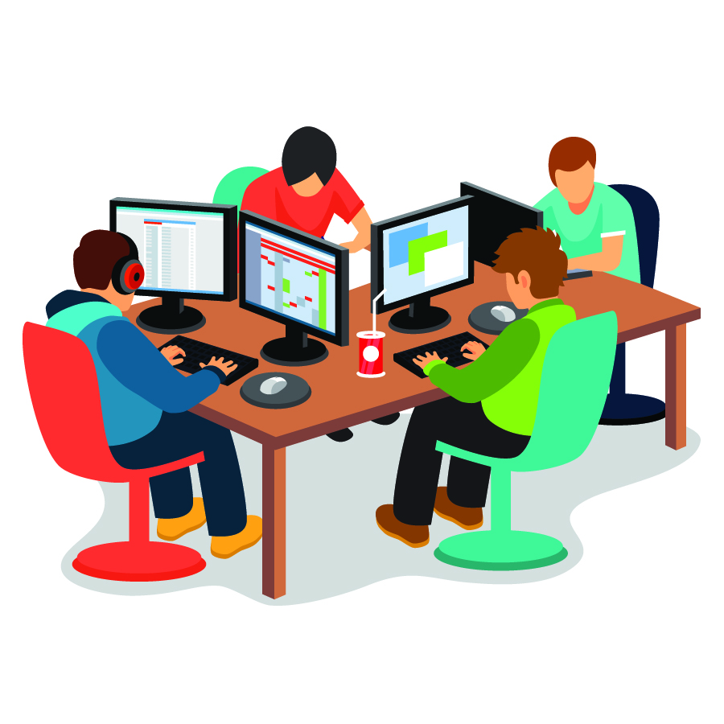

Learning more than just coding
13 Dec 2023
One thing is learning to code
…but being a software engineer requires a lof of other skills as well. It’s like how a carpenter needs to know how to use a hammer, but also how to design solid structures and supporting elements. A programmer needs to know how to make the script work as intended, but also master the other skills, to make sure his deliverables are of high quality. How to document the code, how to make other people understand it, how to develop a code in a team, how to make sure you follow given standards, to make the code readable and maintainable.
Focusing on the whole picture
Most of the previous computer science classes I’ve taken, has only focused on the hard skill of learning to code in a specific language, or in a certain way. Not many has implemented the bigger picture, giving lectures in how to efficiently create a coding project as a team, and how to implement git in an efficient matter. My recent Software Engineering class at University of Hawaii, makes sure their students get a solid foundation for pursuing a career in software engineering.We’ve had modules spanning from functional programming, to ethical issues in software engineering, via coding standards and configuration management. And most importantly, we’ve experienced team work.
I’m not alone in my programming world
Sometimes life feels easy when you work on you own solo project. You have written every single line of code yourself, you know how everything works, and you don’t have to worry about other people interfering with you genius plan. To be clear, that’s not how most real world coding projects work. You’ll be working in teams, with people with different tech backgrounds, different experiences, different ways of thinking. And you need to work with all these people to create complex and robust projects. To make this doable, a good understanding and implementation of git, or another version control system, is crucial for the success of the project. This mentioned class ended with me creating a project with a group of six other students, a responsive webpage with a functional backend, including a database. When we created the webpage from scratch, every one of the programmers needed to be confident with using agile project management. We had a project board to keep track of our issues, and had certain guidelines for branching, merging and deployment. Because the class had lectures and exercises in all these topics, the project went smoothly.
Semantics
When six inexperienced students get scrambled together to create a website in five weeks, we do in many ways look like a team which would be formed in the working space. Some have C++ background, some Java, others Python. Some has created websites as a hobby for years, others had never tried website development before the current class. And every single one had slight differences in how to structure code, where to add spaces, how many apostrophes to use, how to declare variables and so on. And to be honest, we didn’t have enough experience to be consequent within our own lines of code either. This is why I’m so glad we had been introduced to coding standards. Not only as a concept, in how to structure your code, so it’s readable for others, but also as a tool, which we could implement into our project, which highlighted violations of the standard when writing, helped fix them, and reported any errors in the whole project scope. This tool helped everyone follow the same conventions, and made teh code more uniform. If you look at the codebase, it’s not easy to tell who wrote what, as the semantics are so similar.

Feeling a bit more prepared
Becoming a software engineer is a long journey, and I believe it’s not until you’ve gotten a few years experience working in the industry, you start to get a hang of what it actually takes. I’m not expecting to graduate college, with all the knowledge, and I believe just even a few weeks in a coding job, will teach me more than what some extra college credits would. Regardless, all the different topics I can learn as a student, will make me more prepared for what’s ahead. And all the modules in this class combiner, has given me a better understanding of what it takes to be a software engineer. Not only do I now know an additional language, I’m also experienced in agile team development.